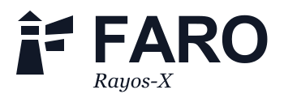
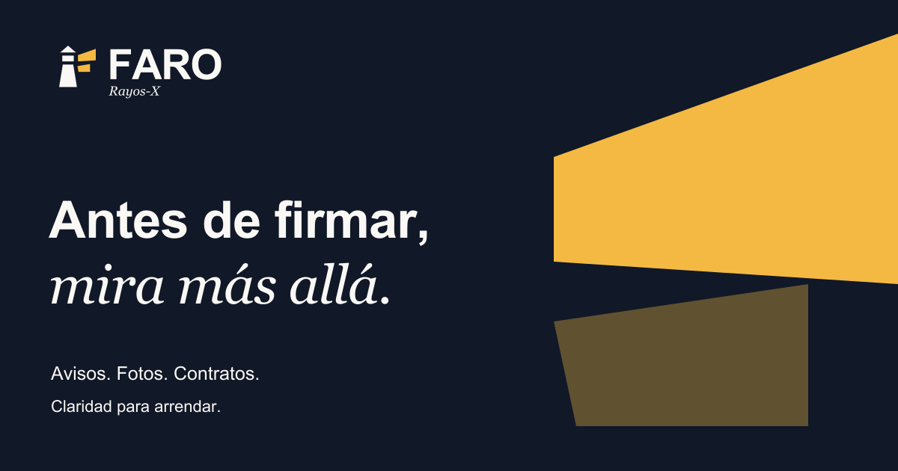

Antes de firmar,
mira más allá.
mira más allá.
Claridad para arrendar.
Claridad para arrendar.
FARO acompaña a quien arrienda a entender lo que un aviso, una foto o un contrato dejan fuera.
El faro representa orientación. Sus haces sugieren una F y extienden la mirada más allá de lo evidente. Rayos-X identifica la función de análisis dentro de la marca FARO.
Explicar sin alarmismo. Mostrar qué se observó, qué se infiere y qué falta verificar.
Evitar promesas como “sin riesgos”, “detectamos todo” o “aprobación garantizada”.



Los SVG y PNG de logos tienen fondo transparente. Sobre fotografía, usar una placa de color sólido. Nunca agregar sombras, degradados ni contornos.
Texto y superficies oscuras
Fondo principal y aire
Acento de marca y énfasis
Interfaz, titulares y datos. Alternativa: Helvetica / sans-serif del sistema. Números tabulares para importes y porcentajes.
Acentos editoriales y descriptor Rayos-X. Reservar para frases breves; los párrafos y controles usan sans serif.
Estados funcionales: verificado #047857 · pendiente #B45309 · conflicto #B91C1C. Ámbar de marca no reemplaza estos estados. Añadir siempre texto o un icono.
Reservar x a cada lado del logo, donde x equivale a un cuarto de la altura del símbolo. Ningún texto o borde debe entrar en esa zona.
Horizontal con descriptor: 200 px / 45 mm.
Vertical: 150 px / 35 mm.
Compacta: 120 px / 28 mm.
Símbolo completo: 32 px / 8 mm.
Micro sin segundo haz: 16–24 px.
No estirar, rotar, recolorear por estado ni alterar la relación símbolo / nombre. No usar ámbar como texto pequeño sobre papel.
Los mínimos impresos son orientativos: confirmar con una prueba en el soporte y sistema de impresión final.


Iconos en 512 y 1024 px. Favicon simplificado de 16 y 32 px.
El sistema operativo puede aplicar su propia máscara al icono cuadrado.

Reúne el aviso, las fotos
y el contrato para comparar.
Ejemplo visual de aplicación.
24 versiones: horizontal, vertical, compacta, nombre, símbolo y micro, en color, reversa y dos monocromías. Letras convertidas a trazados; no requieren fuentes instaladas.
Las mismas variantes en resolución 3×. Iconos en 512 y 1024 px; favicon en 16 y 32 px; avatar en 400 px.
Portada de 1200 × 630 px y publicación de 1080 × 1080 px, en SVG y PNG.
Marca horizontal, favicon e icono de aplicación incorporados al cliente. Tokens JSON y CSS para extender el sistema.
El generador Python conserva geometría y exporta letras a trazados con FontTools. Arial y Georgia se utilizan desde el sistema; sus archivos de fuente no se redistribuyen.
Versión inicial de identidad. No incluye registro de marca ni comprobación de disponibilidad legal.